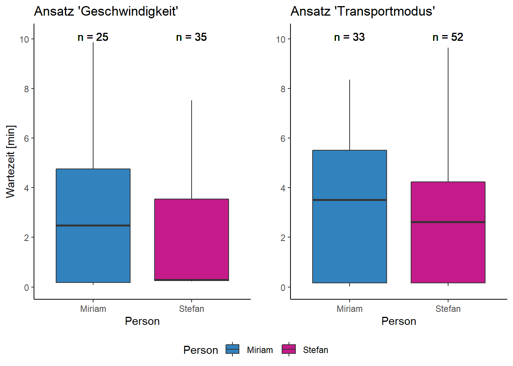
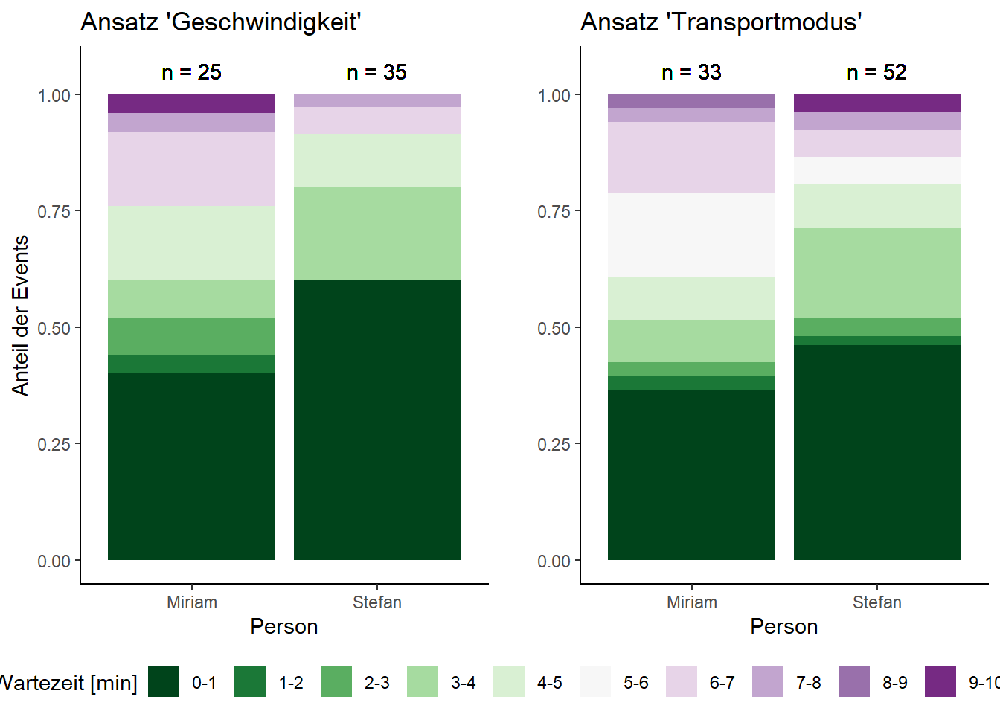

Wartezeit an ÖV-Haltestellem beim Reisebeginn
1 Hintergrund und Forschungsziele
Passagiere empfinden in der Regel das Warten an Haltestellen des Öffentlichen Verkehrs (ÖV) als äusserst lästig (Van Hagen 2011). Die Schweizer ÖV sind international bekannt für ihre Pünktlichkeit (Kaindl 2022), wodurch die Länge der Wartezeit zu Beginn einer Reise meist selbstverschuldet ist. Nach Csiskos & Currie (2008) gibt es zwei verschiedene Arten von Fahrgastverhalten: Eine Gruppe kommt zufällig an, während eine andere Gruppe aktiv versucht, ihre Wartezeit zu minimieren, indem sie rechtzeitig zur geplanten Abfahrtszeit bei der Haltestelle ankommt.
In unserer Projektarbeit möchten wir unsere tägliche Wartezeit an ÖV-Haltestellen untersuchen. Dabei wird ausschliesslich der Beginn einer Reise betrachtet. Folgende Fragen sollen anhand zweier leicht unterschiedlicher methodischen Ansätzen beantwortet werden:
- Wie oft reisen wir mit den ÖV?
- Sind die Wartezeiten pro Person von Reise zu Reise unterschiedlich lang?
- Wer verbringt durchschnittlich mehr Wartezeit an den ÖV-Haltestellen?
- Kommen unsere beiden methodischen Ansätze zu den gleichen Resultaten?
2 Methode
2.1 Daten
Unsere Daten wurden in RStudio (Posit team 2023) mit der R Version 4.2.1 (R-Core Team, 2022) analysiert. Die Daten bestehen aus eigenen Bewegungsdaten, welche mit der Applikation Posmo Project (Datamap AG, Version 22.01.16, 2023) erfasst wurden (Abildung 1). Daten wurden vom 03.05.23 bis 21.06.23 mit einer Frequenz der Lokalisierungsdaten von 10 Sekunden aufgenommen. Fand keine deutliche Bewegung statt, wurden die Datenpunkte durch Posmo automatisch entfernt. Die Daten liegen als CSV-Datei vor und beinhalten u.a. Datum & Zeit („datetime”), x-Koordinaten („long_x”), y-Koordinaten („lat_y”) und Transportmodus („transport_mode”).
# A tibble: 6 × 7
user_id datetime weekday place…¹ trans…² lon_x lat_y
<chr> <dttm> <chr> <chr> <chr> <dbl> <dbl>
1 d081d87a-d5b5-42fc-ac… 2023-05-02 22:00:00 Wed Alpthal <NA> 8.70 47.1
2 d081d87a-d5b5-42fc-ac… 2023-05-03 03:21:27 Wed <NA> Walk 8.70 47.1
3 d081d87a-d5b5-42fc-ac… 2023-05-03 03:21:27 Wed <NA> Walk 8.70 47.1
4 d081d87a-d5b5-42fc-ac… 2023-05-03 03:21:41 Wed <NA> Walk 8.70 47.1
5 d081d87a-d5b5-42fc-ac… 2023-05-03 03:21:57 Wed <NA> Walk 8.70 47.1
6 d081d87a-d5b5-42fc-ac… 2023-05-03 03:22:11 Wed <NA> Walk 8.70 47.1
# … with abbreviated variable names ¹place_name, ²transport_mode
Zusätzlich wird der Datensatz „Haltestellen des öffentlichen Verkehrs” vom Bundesamt für Verkehr (BAV 2015) verwendet, welcher alle ÖV-Haltestellen beinhaltet.
2.2 Datenvorverarbeitung
Die Posmo-App ist noch in der Entwicklung und zeichnet die Transportmodi nicht immer korrekt auf. Die Daten wurden deshalb von uns auf POSMO (datamap.io) überprüft und falls nötig der Transportmodus (Bsp. “Train”, “Walk”, usw.) von Hand angepasst.
2.3 Methode
2.3.1 Ansatz «Geschwindigkeit»
Um den Start einer Reise zu finden, werden die Daten auf eine bestimmte Abfolge von Bewegungen (Segmente, siehe auch Laube 2017) durchsucht. Zu Beginn der Abfolge darf keine Bewegung stattfinden, man ist zum Beispiel zu Hause oder bei der Arbeit. Dafür muss zwischen zwei Datenpunkten eine Zeitdifferenz über einem gewählten Schwellenwert liegen. Hierfür haben wir einen schwellenwert von zehn Minuten gewählt, da wir davon ausgehen, dass wir nie länger als 10 Minuten an einer ÖV-Haltestelle warten. Zudem sollte der Schwellenwert so tief wie möglich sein, damit auch Ausflüge (Bsp. Spaziergang, Feldarbeit, usw.), bei welchen eine kurze Pause eingelegt wird, in die Datenauswertung einfliessen.
Die restlichen Datenpunkte werden anhand der Geschwindigkeit in Segmente mit langsamer oder schneller Bewegung eingeteilt. Als “langsam” werden Bewegungen kleiner als 45 km/h klassifiziert. Die langsamen Bewegungen sollten die Bewegungen zu der ÖV-Haltestelle abdecken, welche zu Fuss oder mit dem Fahrrad zurückgelegt werden. Bewegungen gleich oder grösser als 45 km/h werden als “schnell” klassifiziert. Diese Bewegungen sollten die ÖV abdecken. Der Schwellenwert wurde so gewählt, da Stefan auf seinem Weg zur ÖV-Haltestelle Geschwindigkeiten von über 40 km/h erreicht.
Um den Start einer Reise zu finden, muss folgende Abfolge der Segmente vorliegen:
- keine Bewegung
- langsame Bewegung
- schnelle Bewegung
Die Wartezeit kann anschliessend für alle gefundenen Events berechnet werden (Wartezeit = difftime (min(Segment schnell), max(Segment langsam))).
Die räumlichen Startpunkte der Reisen wurden mit den ÖV-Haltestellen aus dem Datensatz „Haltestellen des öffentlichen Verkehrs” validiert, wodurch Reisen mit dem Auto wegfallen, welche ebenfalls schnelle Segmente darstellen. Dafür wurde ein Buffer von 100 Metern um ÖV-Haltestellen mit den Positionsdaten der Wartezeit verschnitten. Die 100 Meter wurden gewählt, da die Warteposition auf einem Perron stark vom Punkt der ÖV-Haltestelle aus dem verwendeten Datensatz abweichen kann. Einen noch höheren Wert konnte jedoch nicht verwendet werden, da Autoreisen in knapp über 100 Metern Entfernung zu ÖV-Haltestellen gestartet wurden. Die verbleibenden Datenpunkte geben die für uns relevanten Events an (Abbildung 2).

Einige ÖV-Haltestellen werden dabei öfters benutzt als andere (Abbildung 3).

2.3.2 Ansatz «Transportmodus»
Um zu validieren, wie gut der Ansatz “Geschwindigkeit” funktioniert, machen wir eine zusätzliche Analyse mit den Angaben der Transportmodi. Auch hier gehen wir davon aus, dass wir nie länger als zehn Minuten auf das ÖV warten.
Dabei werden die Daten auf eine bestimmte Abfolge anhand des angegebene Transportmodus durchsucht.
- keine Bewegung
- Transportmodus Walk/Bike
- Transportmodus Bus/Train/Tram
Die Wartezeit kann anschliessend für alle gefundenen Events berechnet werden (Wartezeit = difftime (min(Segment schnell), max(Segment langsam))).
3 Resultate
Die beiden Verfahren haben eine unterschiedliche Anzahl Events ergeben. So haben wir zusammen 60 (Ansatz “Geschwindigkeit”), bzw. 85 (Ansatz “Transportmodus”) Reisen mit dem ÖV zurückgelegt. Miriam macht 0.51 (Ansatz “Geschwindigkeit”), bzw. 0.67 (Ansatz “Transportmodus”) ÖV-Reisen pro Tag. Stefan macht 0.71 (Ansatz “Geschwindigkeit”), bzw. 1.06 (Ansatz “Transportmodus”) ÖV-Reisen pro Tag.
Beim Ansatz “Geschwindigkeit” ergeben sich folgende Resultate: Miriam wartet im Mittel rund 3.1 Minuten (SD = 2.9), während Stefan im Mittel rund 1.9 Minuten (SD = 2.2) wartet. Die Wartezeiten sind von Reise zu Reise unterschiedlich lange.
# A tibble: 2 × 6
person Mittelwert Minimum Maximum Standardabweichung Bereich
<chr> <dbl> <dbl> <dbl> <dbl> <dbl>
1 Miriam 3.01 0.08 9.85 2.88 9.77
2 Stefan 1.92 0.23 7.52 2.20 7.29Beim Ansatz “Geschwindigkeit” ergeben sich folgende Resultate: Miriam wartet im Mittel rund 3.3 Minuten (SD = 2.8), während Stefan im Mittel rund 2.6 Minuten (SD = 2.7) wartet. Die Wartezeiten sind von Reise zu Reise unterschiedlich lange.
# A tibble: 2 × 6
person Mittelwert Minimum Maximum Standardabweichung Bereich
<chr> <dbl> <dbl> <dbl> <dbl> <dbl>
1 Miriam 3.32 0.0167 8.35 2.76 8.33
2 Stefan 2.61 0.0333 9.65 2.71 9.62Miriam wartet durschnittlich länger als Stefan an den Haltestellen (Abbildung 4). Der Unterschied ist jedoch nicht signifikant (T-Test, p=0.10 resp. p=0.25)

T-Test für den Ansatz “Geschwindigkeit”:
Two Sample t-test
data: wartezeit by person
t = 1.6571, df = 58, p-value = 0.1029
alternative hypothesis: true difference in means between group Miriam and group Stefan is not equal to 0
95 percent confidence interval:
-0.2263252 2.4030109
sample estimates:
mean in group Miriam mean in group Stefan
3.005200 1.916857 T-Test für den Ansatz “Geschwindigkeit”:
Two Sample t-test
data: wartezeit_minutes by person
t = 1.1706, df = 83, p-value = 0.2451
alternative hypothesis: true difference in means between group Miriam and group Stefan is not equal to 0
95 percent confidence interval:
-0.4970964 1.9191632
sample estimates:
mean in group Miriam mean in group Stefan
3.316162 2.605128 Werden die Wartezeiten in Kategorien eingeteilt, ist ersichtlich, dass diese bei den beiden Ansätzen unterschiedliche Ergebnisse zeigen (Abbildung 5). Die Verteilung der Anteile der Events sieht leicht unterschiedlich aus. Zudem gibt es je nach Ansatz und Person auch Wartezeiten von zehn Minten.

Die folgende interaktive Karte (Abbildung 6) zeigt alle ÖV-Haltestellen mit Angaben zur Wartezeit des Ansatzes “Transportmodus” an.
Abbildung 6: Interaktive Karte mit den ÖV-Haltestellen, wo eine Reise begonnen wurde.
4 Diskussion
Bei der Bearbeitung der Fragestellungen stiessen wir auf einige Probleme und Grenzen. Beim Ansatz «Geschwindigkeit» ergibt sich durch das Setzen des Schwellenwertes für die Geschwindigkeit ein Problem. Wird der Schwellenwert zu tief gesetzt, können Bewegungen auf dem Weg zu der Haltestelle bereits als schnelle Bewegung eingestuft werden, obwohl wir diese als langsame Bewegungen haben möchten. Ein Beispiel: Stefan geht oft mit dem Fahrrad zur ÖV-Haltestelle und erreicht dabei Geschwindigkeiten über 40 km/h. Deshalb wurde der Schwellenwert auf 45 km/h gesetzt. Nun kann es aber sein, dass das öffentliche Verkehrsmittel beim Start der Reise langsam fährt und diese Bewegung als langsame Bewegung eingestuft wird. Dies hat zur Folge, dass sich die Wartezeit auf 10 Sekunden, also die Zeit zwischen zwei Datenpunkten beschränkt und nicht der Wahrheit entspricht. Die Daten werden verfälscht. Gschwend (2015) erwähnt solche Probleme bei der Erkennung von Stopps und Bewegungen ebenfalls und stellt in seiner Arbeit eine Bewegungs-Kontext-Relationsmatrix auf der Grundlage von Modellen vor.
Beim Ansatz «Transportmodus» sind wir auf die Qualität von Posmo angewiesen. Den Transportmodus können wir zwar manuell anpassen, die Segmente sind aber relativ fix (Erfahrungen haben gezeigt, dass die Funktion «split segment» nicht einwandfrei funktioniert). Es kam einige Male vor, dass langsame und schnelle Bewegungen am Start einer Reise als ein Segment dargestellt wurde. Der Transportmodus war dann entweder Bus, Train oder Tram. Ein Segment des Transportmodus Walk oder Bike fehlte. Daher wurde auch kein Start einer Reise erkannt. Dies hat Verluste von Datenpunkten zur Folge. Eine Verfälschung von Datenpunkten liegt aber nicht vor..
Aufgrund der Frequenz der Lokalisierung, können die Wartezeiten nur auf 10 Sekunden genau sein.
Der Ansatz «Geschwindigkeit» zeigt auf, dass die Transportmodi nicht einzig aufgrund der Geschwindigkeit eingeteilt werden können. Die Daten werden verfälscht und können nicht interpretiert werden. Der Ansatz «Transportmodus» ergibt deutlich bessere Daten. Bei diesem Ansatz waren wir aber darauf angewiesen, dass wir bereits vorgegebene Segmente hatten und diese nur noch klassifizieren oder validieren mussten. Dies ist zeitintensiv und für grössere Datensätze nicht denkbar. So können auch nur Daten bearbeitet werden, wovon man selbst weiss, welcher Transportmodus verwendet wurde.
Um die Auswertung auch auf grössere und fremde Datensätze auszuweiten, wäre eine Verbesserung der Erkennung des Transportmodus von Vorteil. Busse und Trams wurden zum Beispiel immer als Autos klassifiziert. Hierfür wäre vielleicht ein Abgleich mit Datensätzen des öffentlichen Verkehrs möglich. Zudem gab es manchmal Segmente, bei welchen der Transportmodus als unbekannt gesetzt wurde. Dennoch würde eine entsprechende Fragestellung, welche sich nur auf Zugreisen (inkl. Walk und Bike) bezieht, bereits mit der jetzigen Erkennung der Transportmodi relativ gut funktionieren. Guvensan et al. (2018) verbesserten die Transportmodus- sowie Aufenthaltserkennung markant durch die Entwicklung eines zusätzlichen Algorithmus. Die Erkennung des Transportmodus von Posmo könnte allenfalls durch einen zusätzlichen Algorithmus verbessert werden.
Abschliesend sollte erwähnt werden, wie sensibel Mobilitätsdaten sind. Selbst in einem anonymen groben Mobilitätsdatensatz sind nur wenige externe Informationen erforderlich, um die Spur einer Zielperson zu reidentifizieren (De Montjoye et al. 2013). Daher sollte unserer Meinung nach die Verwendung von Apps, welche Mobilitätsdaten aufnehmen, gut überlegt sein.
5 Literatur
BAV Bundesamt für Verkehr (2015). Haltestellen des öffentlichen Verkehrs, aktualisiert 2015-12-12, https://data.geo.admin.ch/ch.bav.haltestellen-oev/haltestellen-oev/haltestellen-oev_2056_de.csv.zip
Csikos, D., & Currie, G. (2008). Investigating Consistency in Transit Passenger Arrivals: Insights from Longitudinal Automated Fare Collection Data. Transportation Research Record, 2042(1), 12–19. https://doi.org/10.3141/2042-02
Datamap AG (2023), Posmo Project, Version 22.01.16, 2023
De Montjoye, Y. A., Hidalgo, C. A., Verleysen, M., & Blondel, V. D. (2013). Unique in the crowd: The privacy bounds of human mobility. Scientific reports, 3(1), 1-5.
Gschwend, C. (2015). Relating movement to geographic context: effects of preprocessing, relation methods and scale (Doctoral dissertation, University of Zurich).
Guvensan, M., Dusun, B., Can, B., & Turkmen, H. (2018). A Novel Segment-Based Approach for Improving Classification Performance of Transport Mode Detection. Sensors, 18(1), 87. MDPI AG. http://dx.doi.org/10.3390/s18010087
Kaindl, F. (2022). Reisen mit der Bahn: In welchen Ländern die Züge besonders pünktlich sind. Merkur.de https://www.merkur.de/reise/zuege-puenktlich-fernverkehr-bahn-europa-schweiz-daenemark-niederlande-zr-91977341.html#:~:text=In%20der%20Schweiz%20fahren%20Z%C3%BCge%20am%20p%C3%BCnktlichsten%20Am,viele%20Gedanken%20%C3%BCber%20Versp%C3%A4tungen%20innerhalb%20des%20Landes%20machen.
Laube, P. (2017). Representation: Trajectories. In International Encyclopedia of Geography: People, the Earth, Environment and Technology (eds D. Richardson, N. Castree, M.F. Goodchild, A. Kobayashi, W. Liu and R.A. Marston). https://doi.org/10.1002/9781118786352.wbieg0593
Posit team (2023). RStudio: Integrated Development Environment for R, Version 2023.03.0 . Posit Software, PBC, Boston, MA. http://www.posit.co/.
Van Hagen, M. (2011). Waiting experience at train stations. Eburon Uitgeverij BV.